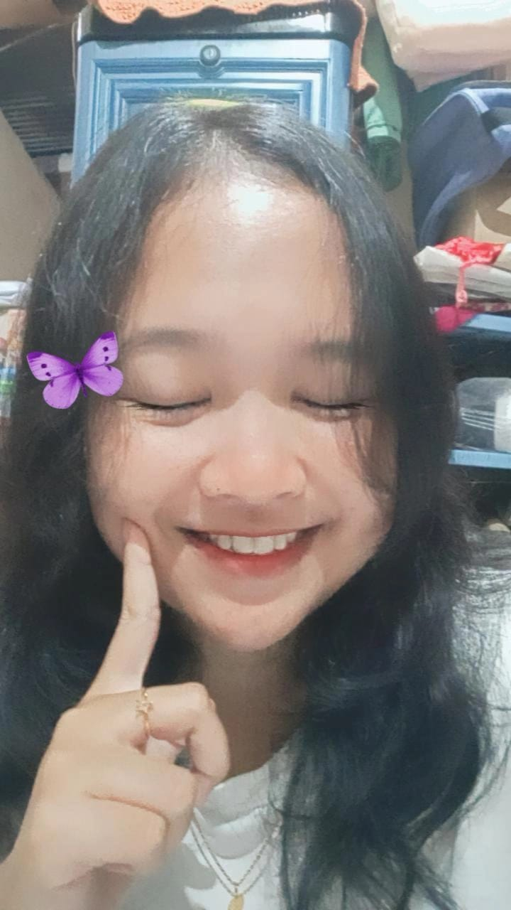

foto kamu pertama yang kamu kirim ke aku

ini chat pertama kamu semangati aku sayang
ini chat pertama kamu perhatian ke aku wkwkwk
moment aku nembak kamu
aku senang bangat,itu malam yang sangat bahagia
ini kamu waktu vc an sama aku,aku suka bangattt!!!!!!
Selamat mengulang hari kelahiran Spesial one day
Selamat ulang tahun!!! Make a wish for ur b’day,tahun ini umur kamu tambah satu tahun semoga
saja kamu sehat sehat, kamu sekarang semakin dewasa, apapun yang kamu inginkan semoga bisa
terjadi, banyak hal yang sudah kamu lakuin dan masih banyak hal yang belum kamu lakuin, semakin
kamu tumbuh besar semakin banyak juga rintangannya but its okayyy karena mungkin masih banyak
hal yang belum kamu tahu tentang diri kamu sendiri. Tahun depan.kamu mungkin akan nemuin genre
lagu/musisi favorit barumu,mungkin akan nemuin penulis favorit barumu, atau kamu jadi suka bangat
jalan kaki padahal mageran. Kamu berubah dan bertumbuh seiring berjalannya waktu.itulah yang bikin
hidup kamu lebih berwarna